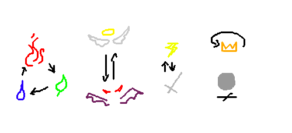

Turns and Actions
Combat begins when one party instigates a fight with another party. This happens either when one or more
combatants realize that a fight is about to start and choose to take the initiative, or when they're attacked.
In the case of being attacked, as soon as the attack action is resolved, initiative is calculated. Otherwise,
when reacting to a threat, you calculate initiative as normal.
Combat ultimately ends when there are no more combatants left to carry on the fight, either on your
side or the enemy's side. Combatants can be neutralized either by leaving the battlefield (fleeing), by
being killed, or by being otherwise incapable of fighting.
Once the battle ends, XP and loot is given out to the players in exchange for the creatures they helped
defeat. Enemies that've been neutralized without being killed are at the players' mercy.
They may decide if the enemy combatants die of their wounds, or if they remain knocked-out.
Targeting
Many actions and abilities require you to target another combatant. There is a variety of ways
with which you can target an opponent. Each way is different, in that it has its own limits.
-
Nearby
Often weapons with an enhanced range will also allow you to aim diagonally.
An attack against a target within the same space as you with either a melee or ranged ability or weapon.
-
Line of Sight (LoS)
The attack travels up to its range specification and will damage the first target it comes
across.
It cannot skip combatants or travel through walls.
-
Instant
The attack has a range but ignores walls and combatants standing between you and your target.
Unless specified, if an ability only has range specified, assume it's a projectile. If it has neither
range nor targeting parameter, assume it's melee. Finally, if the ability itself has no range attribute,
then the effect is universal - meaning it is uninhibited by range.
Initiative
At the beginning of combat, each combatant draws their weapons and readies to fight.
Every combatant rolls 1d20, adding in their Initiative score. Whoever rolls highest goes first.s
If two or more combatants get the same score, then they roll again, marking their score with an A or B to
indicate who goes first.
In addition to the combatants, an initiative labeled "COUNTERS" is created. COUNTERS is granted an initiative
score of 99, always going first. There is no COUNTERS combatant, and is used solely to help players remember
when to update their counters and other start-of-round effects.
Surprise Attacks
If a combatant (or the party) was caught off guard as combat began - such that none of them were
expecting a fight to happen at that very moment - they roll as normal, but their weapon is not drawn.
Turns and Rounds
Battle is measured in turns and rounds. Once per round each player takes their turn, starting
from highest to lowest initiative. A turn (in-game) typically lasts 5 seconds.
Once all players have taken their turns, the round ends and a new one begins.
When it's a player's turn, they first update any start-of-turn timed effects.
Next, they are granted 20 Action Points (AP) with which to spend on actions. Common
actions and abilities all use AP, and a few require resources.
Finally, any end-of-turn timed effects are updated, and special effects such as
bleeding or poison are applied.
Using Actions and Abilities
Actions and abilities are seldom free and must be paid for with AP and/or vital resources.
All basic actions require an amount of AP, while almost all abilities require AP and an amount
of stamina, mana, and focus. While you're able to spend an excess of AP and be stuck charging,
you cannot spend more of a vital resource (mana, stamina, focus) than what you have, and if you
don't have enough, then the ability can't be used.
Subtract the required resources from your character as indicated by Use attribute. Resources
such as AP, Stamina, Mana, and Focus, may be listed there. If no AP is listed, then the score does
not cost AP to use.
Some abilities, as part of their Use attribute, can only be invoked a limited amount of times
per battle. This is listed as X/battle or X/Round, where X is most often 1 or 3.
Even if you have enough resources to invoke the ability, if you've used it too many
times, you cannot use it again.
Though not as common, some abilities that spawn objects like weapons, potion, and buildings,
will require an amount of materials to build. Like spending vitals and AP, you'll spend
the listed materials as part of the Use condition.
Every once in a while, you may see the variable X in the use cost, such as with XAP or Xsta.
This means that you spend as much of the resources as you want, in affect setting the value
of other X's in the ability.
Status Effects
Status effects are temporary modifiers that most often hinder your performance. It might be that
you're bleeding and will soon pass out, or that maybe you've been blessed with great accuracy.
When you get a status effect, you can only have it once and must wait until it has worn off
or is removed for you to take the status effect again.
The exception is for status effects that are marked as Stackable.
The influence of Status Effects occur at the end of the affected player's turn.
Charging Actions
You cannot make an action if you can't offer enough AP - however, you can choose to
charge it instead.
In charging an action, you spend any remaining AP on the action and remain in place while you wait for more AP
from your next turn. While charging, you cannot
make reactions or actions.
When your next turn comes around and you are granted more AP,
the amount is automatically spent on your charged action.
Once the action is fully paid for, the action is finally made.
Pay by Burn
Some AP costs have an exclamation mark (!) attached, meaning that the ability can be burned.
If you don't have the AP but still have the Stamina, Mana, and/or Focus, you may execute the ability immediately,
driving your AP into the negatives. Afterwards you're in cooldown, where the normal rules of charging are in affect
until your AP is above 0 again. This cannot be canceled.
Battle Transience
The first rule of combat is Battle Transience:
what happens in battle, stays in the battle.
Or more accurately, any changes made to your character are undone
after the end of the battle. You might think of combat as though it were an alternate reality from
the one you started in. This essentially covers anything done to you or your allies through actions and abilities,
such as changes to your vital scores, status effects, and markers, counters, props, and mobs.
There are a few exceptions.
-
Death. If you die in combat, you'll remain dead after it unless you spend a revival coin.
-
Revival Coins. If you revive yourself with a revival coin, the coin will remain lost after combat.
-
Rewards. Your victories in combat are remembered and rewarded. After combat, you'll
receive experience points and drops from the creatures you slayed.
-
Consumables. Potions, rations, antidotes, and other limited-use remain used.
In the same respect, if you come into battle with missing equipment or stat changes, anything you
did in combat to change those values are undone to the way before at the start. Minor encounters
and obstacles don't count as combat, and may tax you in small ways before the real battle.
Though it may not seem like it at first, battle transience is ultimately to the advantage of your character.
You don't have to overstock on equipment, allowing you to travel lighter and more battle-ready. Though
any bonuses from your abilities don't last, any lost equipment and penalties that would have been permanent
in battle are recovered.
Enlarged Scope
As an optional rule, the players (including the DM) can enlarge the scope of Battle Transience
to include other measurable sequences of time and space, such as the dungeon itself, the entire day,
or the entire week.
This is for the purpose of making the game just a bit harder, since then, resources would remain
lost longer and player revivals would have to wait longer.
For example, if the transience was increased
to cover the entire dungeon and not just the battles inside, if a player character died in one of the
battles, then even though they had a revival coin on their person, the coin wouldn't take effect
until after the rest of the party decided to head back to town.
-
Dungeon Transience
Battle Transience would not take effect until after the players left the dungeon or general area.
-
Safepoint Transience
Battle Transience would not take effect until you've returned to your base of operations, such as a
resupply area, a town, a rest-area in a dungeon, or your wagon.
-
Campaign Transience
Battle Transience does not take effect until after the campaign has ended.
Weapons
Weapons are the basis of a capable warrior. If you run out of any of you resources, you'll
still have your weapons equipped to help you deal out damage.
You have two slots for weapons: primary and secondary.
Primary weapons are equipped to your dominant hand, while secondary weapons are equipped
to the other.
Every weapon has a set of scores that explain how it is used and how it behaves.
-
Type
Determined which of your Damage scores will benefit from this weapon's ranking.
Some abilities are dependent on your weapon's typing.
-
Weight Class
Abbreviated as WC, Weight Class indicates how physically heavy your weapon is. The heavier
it is, the more damage it does. However, heavier weapons cost more in resources to use.
There are five official weight-class listings.
-
VL. Very Light. The weapon is very small, weighing very little and dealing little damage.
-
L. Light. The weapon is small.
-
M. Medium, or average. The weapon is properly sized for the average person.
-
H. Heavy. The weapon requires more strength and effort to use, but deals more damage.
-
VH. Very Heavy. The weapon is over-sized and requires a lot of effort to use.
-
Use
How much it costs to use your weapon. All weapons cost Action Points to use, while
heavier ones also cost stamina.
-
Rank
Listed in between parenthesis (most often beside the damage variable).
The higher the ranking score, the better the final result will be.
Your critical score for base damage is also determined from your weapon's rank by increasing it by 1.
-
Weight
Abbreviated as Wt, which measures in units (nothing too specific) how much the weapon weighs
you down. You must be careful, as heavier weapons can quickly over-encumber you.
-
Attributes
Your weapon attributes indicate what special abilities your weapon has. A general list of
attributes can be found in the equipment section.
Attributes
Attributes can be very effective. Throughout your adventures, it is even possible to enhance the properties
of an attribute to make it even more effective. Just about any attribute can be enhanced.
Attributes with a plus-sign (+) beside indicate that their property has been enhanced.
How this enhancement effects the attribute can be found in the weapon attributes listing in
the equipment section.
Common Actions
Every combatant possesses a set of basic actions that they can perform regardless of their primary class. These
are called common actions.
To make an action, first declare which action you want to make, then spend the AP. Some actions
require that you spend Stamina, Focus, or Mana, or else they won't work. You may also be required
to roll dice to see if the action works.
Movement
AP Cost: 5+(2/turn)
Declare that you are moving and to where.
Move to any adjacent space connected to your space with a dotted border.
You cannot enter into a space unless its border is dotted.
Spaces connected on a point count as being connected.
Sprint
AP Cost: 20 AP
Declare that you are sprinting, then move four spaces instead of one.
Note: You suffer the effects of Difficult Terrain while moving through.
Difficult Terrain
It costs 10AP to move into terrain that is terribly bumpy, cluttered, or otherwise difficult to navigate.
Often, difficult terrain will require a check to enter or leave from. This check will test either your
Melee, Skill, or Magic Power scores against a difficulty.
Bottomless Pits
If you fall into a bottomless pit, fear not! for you only take a quarter of your max health
in damage, and if you survive, you'll return to the battlefield at your starting
position when battle began on your next turn.
Lava counts as a bottomless pit.
Ascending and Descending
Most maps have varying topography, with ramps, stairs, and hills to help the player reach higher elevations.
Spaces of steeply varying heights, such as stairs and rock-walls, are treated as difficult terrain.
Fall Damage
If you are pushed off a ledge and into the air, you'll fall to the ground and take neutral damage
equal to 15 times however many spaces you fell. You do not take fall damage for not leaving your space.
Swimming
You may swim through water and other thin liquids, treating it as difficult terrain.
You will suffocate (and die) if you're underwater for more than 3 rounds.
Basic Attack
AP Cost: [see weapon AP cost]
Declare who you are attacking and which weapon you'll be using to do it.
You may attack any combatant that is within the same space as you.
First, make a hit check and compare against your opponent's melee evasion score. If the result
meets or exceeds their evasion, the attack hits.
If you used a melee-type weapon, you'll aim with Melee-type Accuracy and deal Melee Damage, whereas if you used a skill-type weapon, you'll use skill-type Accuracy and inflict skill damage, and so on.
Critical Success and Failure
If your hit check rolled a natural 20, you use your Crit score for damage instead.
Additionally, if your hit check rolled a natural 1, any additional action for the rest of the turn, use cost is increased by 50%.
Please note: Class abilities use different critical rules.
Non-Lethal Attacks
If you want to simply knock an opponent out, rather than potentially kill them, you can declare that
your attack is non-lethal. If the attack hits, it will do enough damage to reduce the target's health
to 0.
Ranged Projectile Attacks
Some weapons, such as bows, crossbows, slings, and magic staffs, can also make ranged attacks by firing
projectiles. As part of their attributes, a type of projectile is listed - either your mana, or one
from your inventory. Whenever a ranged attack is made, one of the projectiles is removed from your
inventory.
Ranged weapons have a range score listing their minimum and maximum ranges. Measure the distance in spaces.
If the target is in the same space as you, the distance is 0. If they're in the next space over,
it's a distance of 1, and so on.
If the target is out of your distance, the attack will fall short.
Additionally, if the target is in the same space as you but you don't have ammo, you can make
a melee attack at it, treating the weapon's Pwr score as 1 instead.
The High Ground
Your Accuracy checks gain +3 for every 1 space of elevation you have over an opponent.
You may make ranged attacks against combatants that are more than 1 space above or below you.
Stealth and Hiding
During combat, if you're concealed behind Full cover, you may make a
Skill self-check to hide yourself. Upon success, you enter Stealth and become hidden.
If you move to another space, make the check again to remain in Stealth. Some terrain
conditions, such as darkness, or intense light, or glass on the ground, can either
grant advantage or disadvantage to your checks - at GM discretion.
While in Stealth, all your Evasion scores are increased to 20.
Sneak Attacks
If you attack an unsuspecting opponent, either before battle has started, or if they are unable to respond (or unconscious),
your attack automatically hits for critical damage.
Defending with Shield
AP Cost: 10
Declare that you are defending and which shield you'll be using. Add the shield's Protection
to your Health until the start of your next turn.
The shield's protection score is not damaged by defending - only the bonus health. If the health bonus is depleted,
any excess damage rolls over.
Guarding
AP Cost: 5
Declare that you are guarding and then temporarily increase your evasion scores by +3.
until the start of your next turn.
Cover
AP Cost: 5
If your space has cover (such as walls or trees),
declare that you are taking cover and where.
While taking cover, make Luck checks against incoming attacks, whereupon
success, the attack is considered to have missed. This lasts until
the start of your next turn, or until the cover is destroyed.
Taking more cover improves your chances of success.
-
Very Low Cover: Luck: 15
-
Low Cover: Luck: 12
-
Medium Cover: Luck: 10
-
High Cover: Luck: 8
-
Very High Cover: Luck: 5
-
Full Cover: Luck: 2
You gain full when you're in a fully enclosed area. The doors and windows are shut and no one can see
you.
Unarmed Attacks
For 10AP you can make an unarmed attack, kicking, punching, or using whatever else you were born with.
Unarmed attacks melee-typed and have a Rank of 1, using your MlePwr for damage of the same element as your class.
Use Equipment
AP Cost: 5
Declare that you wish to use either one of your weapon, tools, materials, or consumables,
and how you wish to use it. By this action you can:
-
Swap, draw, equip, store one of your weapons,
-
Consume a consumable item and benefit from its effects, or,
-
Swap, equip, or store one of your tools.
Additionally, with any piece of equipment, you can give one of them to an ally in the same space, granted
that they are also willing to accept the equipment into either their inventory or into a free hand. In the case
of stacked items, you may treat them as a single item when giving or receiving. Finally, if you just don't
want an object, you can drop it on the ground, where it will remain until destroyed or recovered by another
combatant.
As a note: consumable items are destroyed forever. They are not recovered at the end of combat.
Materials can be consumed raw, and thus are lost forever.
Destroy
AP Cost: 20
Declare that you wish to destroy an object.
Target an unequipped item outside of a target's inventory, such as a prop, a weapon, clothing,
or accessory, and destroy it.
The destroyed item no longer offers any benefits, including an attack bonus, or abilities.
Additionally, you can also target environment features such as bushes, small trees, doors,
pillars, and stairs.
Withhold Action
Withhold an action to use later on in the round.
AP Cost: 5 + action's cost.
Declare which action (or ability) you are withholding. During the round, either at the beginning or end
of a combatant's action, you may finally use the action. If you don't use the action, it is lost at
the beginning of your next turn and no AP (or resources) is refunded.
Talent Checks
AP Cost: 5
Declare that you'd like to make a Talent check and wait for the DM to determine how difficult it will be
to accomplish. A larger scale check may also require more AP to fulfill, and may even require more than
one turn.
First spending the AP and then make the check. Upon success, the task is fulfilled as usual.
Keep in mind that Efficiency checks are impossible in combat.
Execute
AP Cost: 15
While an opponent is unconscious or in the KO state and you're alone with them in the same square, you can kill
them.
This means reducing their Health points to negative-half their full amount.
Befriend
AP Cost: 5
If a monster's intelligence is either drone, instinctive, or sapient, you can move
into the same space and toss a Monster Treat at its feet.
Make a Luck check.
-
Drone
Beat 16
-
Instinctive
Beat 18.
-
Sapient
Beat 20.
To improve your chances, reduce the difficulty by 1 for every 1/4 of its Health
it's missing.
Upon success, the monster becomes neutral to your party and will no longer want to fight.
At the end of combat, the monster will come submissively creeping out of the bushes and join beside
the party. It is now your new ally, and will no longer attack your party when you pass
through the territory again.
Should you return with a Monster Collar, you can equip it to the friendly monster's Tool
slot, in which it is now an official member of your party. It gets a name, a character sheet,
can gain experience and level-up, and eventually gain Master status.
You can take it with you into town without drawing the attention of the guards, and some
hotels will even allow it inside.
Keep in mind, however, that while it's possible to befriend minibosses
and bosses, once they join your party, they lose their miniboss/boss
status and regain the stats of regular party members.
Befriended monsters, including NPC's in general, do not count towards
the party as influencing the loot of monters.
As a note: only Sapient monsters
can use equipment without assistance from another party member.
Aggro
In combat, the most dangerous combatants should draw the most attention from the opposing side.
Enemies will go out of their way to attack the player with Aggro.
Depending on your team's build, this can be a good thing or a bad thing.
Aggro, standing for "Aggression" is a role that is taken as a kind of status effect
at the beginning of combat. It can be asked for voluntarily at the beginning of your turn,
and some abilities allow you to take or transfer it by force.
If a combatant dies while being an Aggressor, their body is marked
for good luck. At the end of combat, when Luck checks are being
made, marked bodies are gain +5 for their Luck checks.
If a PC is killed while being an aggressor, their killer regains
all their Vitals and any negative status effects are removed.
Alternatively, if a combatant has Aggro but for one reason
or another cannot be targeted, such as due to Stealth,
then the enemy will target the next nearest viable opponent.
Aggro applies to enemies up until their Health is reduced to the Danger threshold.
The Danger threshold is determined by their Intelligence, where the smarter they are, the sooner they'll switch
to focus on the enemies that are dealing the most damage.
Below is a list of Danger thresholds varied by Intelligence levels.
-
Drone: Danger threshold is 10% of max health.
-
Instinctive: Danger threshold is 25% of max health.
-
Sapient: Danger threshold is 50% of max health.
-
Wise: Danger threshold is 75% of max health.
-
Brilliant: They always attack the legitimate threat first.
Elements
Many creatures and abilities possess attributes called elements that indicate their
basic make-up. In combat elements can influence each other in often
extreme ways.
Determining your damage's element...
-
Your element is determined by the ability you're using.
-
If your ability doesn't list an element, use the element of your weapon.
-
If your weapon doesn't have an element, use your own element.
Elements that are strong against another element will increase their rank by 1 for the action.
Elements that are weak against another element will reduce their rank by 1 for the action.
-
Fire is strong against Wind, and weak against Water.
-
Water is strong against Fire, and weak against Wind.
-
Wind is strong against Water, and weak against
Fire .
-
Darkness is strong against Light
and weak against Darkness.
-
Light is strong against Darkness and is
weak against Light
-
Metal is strong against Electric and
weak against Metal.
-
Electric is strong against Metal and
weak against Electric
-
Noble is strong against everything and weak
against everything.
-
Neutral is neither strong nor weak against anything.

For example...
-
A fighter uses a water-based attack against a fire-based monster. Because the monster's element is
weak to the attack's element, instead of taking 10 (2x5) damage, it takes 15 (3x5) .
-
A fighter uses a water-based attack against a wind-based monster. Because the monster's element
is strong to the attack's element, instead of taking 10 (2x5) damage, it takes 5 (1x5).
-
A fighter uses a water-based attack against a water-based monster. Because the monster's element
is neither weak nor strong to the attack's element, no bonus is applied.
While in combat, it is assumed that the written rules come first everyone is bound to the same basic combat rules, such that narrative sense
comes second; that abilities and actions do as they are assumed
to for everyone, all the time.
This is the for benefit of the players that, if they know the rules, then they can generally
know what to expect from enemies and from each other.
Though you might wish to be creative - and there will be times when that is allowed - your creative
endeavors may not always be possible. If they are, then it should be expected that your enemies
will take the same liberties you have.
Abilities
Abilities are special actions that are best understood as simple programs. They contain common keywords, use
conditions,
and instructions that tell you how the ability works, when it can and can't be used. When executing
an ability, read along its attributes from beginning to end, executing instructions as their
conditions are met.
Application
When considering an action, first refer to its application identifier.
-
Actions are only used on your turn.
-
Reactions are only used in response to an event.
-
Passives can be used at any time.
Outside of Combat
When using abilities outside of combat, such as prior to battle, your pre-battle state is saved, such that
when battle transience takes effect, your scores revert as normal. This can be of disadvantage, because you are
using your resources for all future conflicts, until you can recover from potions or from a rest.
Permanent buffs, or buffs without a listed expiration, only last an hour of non-combat time. Traveling, or
general roleplaying, will quickly reduce and undo those buffs (or debuffs)
Outside of battle, each player is granted 100AP to spend on actions. After an hour, the AP is restored back.
If the player would like another 100AP before the hour is over, they may take the 100AP and also
take on the Tired status modifier.
At the beginning of their first turn during their next battle, 5AP is deducted for every instance of
Tired they have. At the end of that turn, the Tired modifier(s) is removed.
Alternatively, the player can have their character rest one hour to remove an instance of Tired.
Note: If Tired subtracts their AP past 0, it will be subtracted from their next turn, and so on,
until fully repaid.
Placeholder Brackets
Most abilities also have variable values that, as your character grows, also grow.
These are called placeholders, and they are identified as a single number appended
by a set of curly-braces with an abbreviate stat inside. Each placeholder is meant
to be used for multiplication, where the initial number is multiplied by the power level
of the referenced stat.
For example...
-
2{MgcPwr} is read as 2 x Magic Power.
-
3{SklPwr} is read as 3 x Skill Power.
-
4{MlePwr} is read as 4 x Melee Power.
If a placeholder doesn't have a number listed, assume it is 1.
Other placeholders also include...
-
CL, representing as Class Level, how many levels you've taken in your current class.
-
TL, representing Total Level, your character's overall level.
-
DL, representing Diversity Level, how many unique classes your character has one or more levels in.
Variable X.
Many abilities feature a special attribute of X, where X can be anything from
a number to a name to a sentence. It is meant to represent a modifiable
portion of the ability. When following the ability's instructions,
read X as what it's meant to represent.
Accuracy
Many abilities have an Accuracy attribute that indicate a d20 plus their accuracy bonuys
must be rolled and a difficulty score beaten before the effects of the ability can be executed.
After you've paid for the ability, make a d20 check.
If the check passes, then the Ability's OnPass/OnHit/Effect attribute is invoked.
Hit checks will refer to the enemy Evasion score that the ability is targeting in a
Accuracy: [Score:Evasion] format. Many checks are just Luck rolls, and will read Luck: X,
where X is a value between 1 and 20.
Remember, if you roll a natural 20 on an ability, its Rank (found between parenthesis) increases by
1 for the rest duration of the check.
Evade
Some abilities feature the Evade attribute, which is like the opposing version of Accuracy.
Instead of the offender making the check, the defender makes a self-check. They will
roll 1d20, subtracting their Accuracy score and adding in the offender's Accuracy score,
and must roll beneath their (the defender's) own Evasion score.
If their check falls below the difficulty score,
then they evade the attack; otherwise, they take damage.
Make a self-check, rolling below your specified evasion while subtracting
the offender's acting Accuracy bonus from it.
Rolling a nat 20 counts as a Crit for the attack.
For example, you make an AoE attack that has Evade: Melee, where your
target takes their Melee Evasion score (10) and subtracts your Melee Accuracy score (2),
and they roll 1d20 while subtracting their own Melee Accuracy score, hoping to get below 8.
Range
Many Abilities have range specifiers that indicate how close (or far away) a combatant
has to be in order for the ability to be able to target them. Most often this is limited to
how close something is, but some special attack require they be further away than the listed score.
A more-than sign (>) specifies that the target must be equal to or further than the listed score.
Some abilities allow you to choose a target within a space, or series of spaces, or the whole battlefield.
-
Beams target every combatant within a line of range; every space that would be touched
by a line is considered part of the range.
Trigger
Reaction abilities are used in response to an action or event, most often in response to
an enemy combatant. Once a Trigger's condition(s) have been met (if listed, you may choose to pay
the Use cost) and then execute the rest of the Ability.
Teamwork Attributes
All classes have at least one or two abilities that feature a teamwork attribute.
If one or more allies are with you in the same space then the teamwork attribute
activates. Any effects specified by the attribute are followed-through.
Additionally, some abilities feature a TmWrk placeholder for the amount of
allied combatants in your space. Many abilities change their effects
or become stronger as more allies band with you. The TmWrk placeholder
only goes up to 3.
Some Teamwork attributes instead feature a penalty for having multiple
allies in your space. These penalties can vary from weakening to the ability
or even actively hurting your allies when used.
As a side note: Miniboss and Boss-type opponents automatically trigger
the Teamwork effect. Minibosses count as two combatants, and Bosses count as three.
An additional placeholder, OutNum, also exists. It stands for Outnumbered.
It is equal to the difference between enemy combatants and
friendly combatants belonging your team in the space you're in.
If you're outnumbered, then the number is positive.
OutNum = [enemy combatants] - [friendly combatants]
For example: if you're the only allied combatant in a space and
there are two enemies in the space, then the OutNum score is 1.
Another example: If you and two allies are in a space against three
enemies, OutNum is equal to 0.
As a note: Even though minibosses and bosses count as allies
towards their own teamwork attribute, they do not count as extra enemies
towards your OutNum attribute; minibosses and bosses count only as themselves.
Solowork Attributes
An opposite of the Teamwork attribute is the Solowork attribute.
It activates when you're the only combatant of your team in a space. It is
unaffected by the amount of enemies in your space. However, once an allie
joins your space, the Solowork attribute is disabled.
Ability Mods
Ability Mods are special modifiers that can be applied to your abilities in order
to change how they work. Their purpose is to help make your abilities more suited
to your build, making you more effective in the long run. This is done by
re-balancing their values and behavior, making one aspect better while another
becomes worse. Done blindly this can make the ability useless - but done
wisely, it'll make the ability much better.
To begin, each Ability can only have one Mod equipped to it at a time.
You may only equip mods in a safe setting, such as a cleared battlemap,
a rest area, or in town.
Every ability is compatible, including your Natural and Doctrine abilities.
Sideboard Abilities cannot be modded, and if an Ability is moved to the
sideboard, any Mods it has attached are removed.
You can't buy Mods from anyone - and neither can they be sold.
Instead, you must either create them from crafting or by
discover them on your adventures. This is because
Mods don't physically exist; They are an abstraction of
your abilities being subtly changed.
Death and Defeat
All combat must come to an end eventually, and while your might side might have won, not all
of your allies may have made it out alive.
Knocked Out
When your character's health is reduced to 0, they become Knocked Out (KO). While in the
Knocked Out status, all of your character's Evasion scores are reduced to 0 and you
cannot make actions or reactions.
While knocked-out, you cannot take damage unless an ability specifically allows it.
Unless executed or revived, your character will remain unconscious for the rest
of the battle.
Death
Once your health reaches negative-half its max score, your character is dead. Their spirit has departed
from their person and all biological functions have ceased to continue.
In accordance with the rule of Battle Transience, if your character
dies before the battle is over and they don't have a revival coin, they remain dead after the battle.
If there was a revival coin on your person at the time of the battle's end, then the coin is destroyed
and your character comes back to life with an amount of health, determined by the quality of the coin.
Return by Death
In the event of a permanent death or team kill, players can petition the DM to invoke the rule of
Return by Death.
The entire escapade up to that moment is rescinded, returning the team back to their last
safe location (such as the town inn). The team find themselves wrapping up a discussion about
a hypothetical scenario in which one or more of them all die in battle.
Being disregarded as being highly unlikely, if not entirely impossible, the team laughs it off.
However, as they step away from the table to resume their adventure, each of them carries the
burdensome memory of that past life, the pain of watching their friends die,
and the sting of their own real death. They will never again be quite the same...
Rechallenging NPC's
Any battles the players have already proven themselves at can be won again at no cost to their coins.
This way, the players can easily return to their previous fights, or find a point to branch off from
and try from another direction.
Small Encounters
Smaller, lower-stakes battles can be reduced to obstacle-like encounters that each combatant completed
by making a check against. These encounters offer rewards and penalties like any other battle, but with
one major twist: since they're part of narrative time, they are exempt from the rule of battle transience.
With small encounters taxing the party's resources, larger battles will become more significant.
A small encounter can be anything from a fight against a small group of monsters,
to overcoming a tall obstacle. Each are treated the same way and pose similar penalties for
failure.
The DM first presents the small encounter either as mandatory or as optional. In a mandatory
encounter, the obstacle has surprised the players and they must react; likewise, in an
optional encounter, the obstacle has been noticed first and the players have the ability to turn
around.
Some encounters may require materials or tools to be able to complete, such as in repairing a broken
bridge, or in swimming to the bottom of a lake. In the case of materials, before any checks are made,
the players must come together and provide the required materials. With mandatory tools, only players
with the proper tools can make the check.
Any players participating in tackling the encounter each make a check to overcome it. The difficulty
is determined by the DM by looking at the scale and potential threat of the encounter, then giving
it a score between 8 and 25. Obstacles with a difficulty below 8 should not be considered
serious obstacles, being too easy to overcome. Difficulties over 20 should be considered potentially
too difficult for players to overcome.
Obstacles
In the case of an obstacle, the DM prompts the players to make an efficiency check against the determined
difficulty score. Upon success, the players overcome the obstacle normally. Upon failure, the players
still pass the obstacle, but with a penalty such as time, resources, and potentially - a revival coin.
The DM can determine how well passing and failing turns out based on the below list.
-
Pass by 0 or higher: General success; average time taken and no extra resources consumed.
-
Pass by 6 or higher: Great success; completed 50% faster than average with only 50% of
expected resources consumed.
-
Pass by 12 or higher: Amazing success; completed 100% faster than average with no resources
consumed.
-
Fail by 0 or lower: Adequate success; took a little longer than expected with no extra
resources consumed.
-
Failure by 6 or lower: Sloppy success; took 50% longer than expected and with 50% more
resources.
-
Failure by 12 or lower: Horrible success; took 100% longer than expected and with 100% more
resources.
While anything might be considered a resource, there should generally be no penalty of focus, mana,
stamina, or health for passing the check. Instead, failure of the bare minimum should set the par
for what's at risk for your well-being, with each successive grade of failure increasing the penalty
by 50% and then 100%.
For example, if you would risk 10 points of your health for an adequate success, then a sloppy success
would penalize 15 points, and a horrible success would take 20.
Battles
Against a small battle, the DM first summarizes the challenge of the battle to the players as a single
difficulty score ranging between 8 and 25. Scores below 8 are considered too easy and that the players
will automatically win, while scores above 18 should be considered too hard and that the players will
most certainly lose.
Additionally, the DM should quickly summarize the threat of an encounter by how it might tax
their resources. Vital scores like Health, Mana, Stamina, and Focus count as resources.
Unlike in obstacles, even if you win, you will still take damage, and only by a
perfect success can you get off without penalty.
Players may then choose which of their scores (Melee, Magic, or Skill) to make a self-check off of.
Each player is independently graded according to the same difficulty threshold.
No matter what, they'll succeed, but based on how well they rolled the penalties and rewards may vary. In fact,
they may even die.
Before the fight, the DM explains the base resource cost to engage in the fight, along with the
difficulty score. Then each player makes their check.
-
Pass by 12 or higher: Amazing success; 0% of the predicted resources are expended.
-
Pass by 6 or higher: Great success; 50% of the predicted resources are expended.
-
Pass by 0 or higher: General success; 100% of the predicted resources are expended.
-
Fail by 0 or lower: Adequate success; 100% of the predicted resources are expended.
-
Fail by 6 or lower: Sloppy success; 200% of the predicted resources are expended.
-
Fail by 12 or lower: Horrible success; 400% of the predicted resources are expended.
No matter how poorly everyone rolled, so long as at least one player is left alive, then it's considered
a victory. Anyone who died expends a revival coin (if they have one) and the adventure moves on.
Loot without XP is then given out for their success as if they had won the fight normally.
Best Practice
No matter if you're doing obstacles or surprise battles, there is a certain
art and science to ensuring that players feel that these compulsory challenges
are fair. Likewise, as the player,
you can ask the DM and expect a straight-ish answer.
Before embarking into dangerous territory, the DM should first warn
the players of the difficulty if the smaller encounters they'll be
facing, and what resources they'll be risking along the way.
For example: The party is about to embark across the countryside
to a neighboring town. However, the town is an hour away by foot. The DM
warns the players that each encounter will risk 10% each member's HP, and
that night is falling, the difficulty score will increase from 10 to 15.
The players decide that the reward of getting to the next town and saving
time in their adventure outweighs the risk of their health. They decide
to proceed anyway.
Additionally, if the DM decides to use a system for random encounters, it
is fair practice to inform the players of the chances of facing an encounter,
just as much as the likeliness that it'll be a dangerous one.
Experience and Rewards
At the end of a battle loot from slayed monsters is collected and experience is rewarded.
Each monster drops their own loot upon death, while each battle has its own loot just for winning. (Where
that loot comes from, no one knows!)
All experience is collected and then divided equally among the combatants (including the ones who were neutralized).
Loot is presumably collected into a neat pile, at which the characters briefly sit around
and divide the spoils among themselves. The amount of gil dropped multiplies by the amount of non-NPC players, so that way
there's enough for everyone.
Many monsters may have the chance to drop a better spoil of loot. This is done with a Harvest check,
and on its monster sheet the chance will be marked with the score that must be beaten. Upon beating
that score, you get the new, better loot drop instead of the other one.
After having killed multiple monsters, the DM decide how the loot drops are done.
There are a few ways, each of which can be fast and/or fun depending on the
circumstances. Whichever way is decided upon, they DM should stay consistent
throughout the rest of the game.
-
Each player rolls for the monsters they killed.
-
If the monster had the Aggro status upon death, loot checks gain +5 to their loot-drop checks.
-
If a special objective (revealed to the party) was accomplished
by the time the battle was won, the best loot is dropped from
all monsters.
Not all campaigns utilize experience points, and that's perfectly okay. Instead, if the campaign is
utilizing milestones, then after each boss battle, each combatant gets to level-up.
Next steps
After collecting enough experience, or when the DM says it's time to level-up,
you can head over to
Level Progression to
learn how to improve yourself.